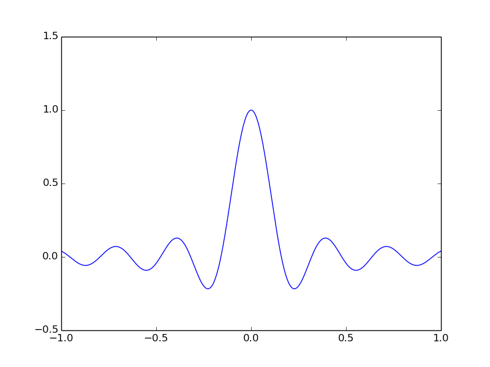

Bu dönem okulda aldığım Sinyaller ve Sistemler dersi hayatımda gördüğüm en zevkli derslerden birisidir. Genelde mühendislik bölümlerinde bu ders tam bir baş belası olarak görülür. Ne anladığının önemi olmadan dersi geç modunda alır herkes. Tüm bunlara rağmen ben dersi cidden sevdim ve boş zamanlarımda sürekli olarak uğraştım. Elektrik-Elektronik ve Bilgisayar mühendisliğinde önemli bir yeri olan bu derse verilen inşallah zamanla daha fazla artar.
Finalleri atlatıp, bahsettiğim derside zorlanmadan verince bunda en büyük payı olan Python ve kütüphanelerinden bahsetmek istedim. Bugün en temel sinyalleri nasıl çizdirebileceğimiz, bunlar üzerinde nasıl çalışabileceğimizi göstermek istiyorum. İlerleyen zamanlarda Fourier dönüşümü ve serilerine de değineceğim. Ama önce temelleri atmak lazım.
Ben uygulamalarımı iPython üzerinde Pylab ile birlikte yapıyorum. Bunun için Debian dağıtımlarında aşağıdaki komutları çalıştırmanız yeterlidir. Diğer dağıtımlar içinde genellikle aynı isimli paketleri kurabilirsiniz.
sudo apt-get install python ipython ipython-notebook
sudo apt-get install python-numpy python-scipy python-matplotlib python-sympy
Gerekli paketleri kurduktan sonra ipython'u pylab modunda açabilirsiniz. Bu şekilde başlatma sebebimiz kütüphaneleri otomatik olarak import etmesidir. Rahatlıkla işinize başlayabilirsiniz. Nerede ne vardı gibi düşünmenize gerek yok. Bu şekilde açmak için ipython notebook --pylab komutunu kullanabilirsiniz.
Sinus ve Cosinus
Temel sinyallerin başında sinus ve cosinus yer alıyor. Zaten bu ikisini çizdirip üzerinde oynamalar yapabildiğimiz zaman geri kalan tüm sinyalleri rahatlıkla çizdirip üzerinde işlem yapabiliriz.
Sinyal dediğimiz aslında x, y koordinat düzleminde yer alan noktalar kümesidir. Bir kısmı kesikli, bir kısmı sürekli olabilir. Biz şimdilik sürekli zamanlı sinyaller ile uğraşıyoruz. Ama dikkatinizi çekeceğim bir konu ne kadar bize sürekli gibi gözüksede temelinde bilgisayar üzerinde yaptığımız işlemler hep kesikli. Bu konu analog, dijital ayrımından kaynaklanıyor. Neyse konumuz şimdilik bu değil.
Öncelikli olarak çalışacağımız bir x alanı ve bu alan üzerindeki değerleri değiştirecek y fonksiyonumuz olacak. Y fonksiyonumuz öncelikli olarak sinus olacak. X alanımızı da 0-1 aralığında 1000 tane nokta olarak belirleyeceğiz. Şimdi tüm bu söylediklerimi koda dökelim ve ilk çıktımızı alalım.
t = linspace(0, 1, 1000)
f = 1
sint = sin(2*pi*f*t)
ylim(-2, 2)
plot(t, sint)
Yukarıdaki kod parçasında öncelikli olarak 0-1 aralığında 1000 tane nokta seçtik. Daha sonra frekansımızın 1 olmasını belirttik. Son olarakta sinus fonksiyonumuzu kuralını uygun bir şekilde 2*pi*f*t formunda belirledik. Arada yaptığımız ylim(-2, 2) işlemi sadece üst ve alt sınır belirleyerek işaretimizi daha net görmek için. Tüm bunlardan sonra elde edeceğimiz çıktı aşağıdaki gibi olacaktır.
Çıktıdan da görebildiğiniz gibi tam istediğimiz sonuca ulaştık. Artık elimizde 0-1 aralığında, frekansı 1 olan bir sinus işareti var. Artık üzerinde temel işlemler yapabiliriz. Mesela bu işaretimizi pi/4 kadar öteleme yapalım. Yani zamanda yavaşlama.
t = linspace(0, 1, 1000)
f = 1
sint = sin(2*pi*f*t)
sino = sin(2*pi*f*t - pi/4)
ylim(-2, 2)
plot(t, sint)
plot(t, sino)
Bir önceki işaretimiz ile kıyaslama yaptığımızda gerçekten de ötelenmiş olduğunu görebiliriz. Elimizde yer alan sinyallere bu şekilde ileri veya geri öteleme yapabiliriz. Bu işlemin tam tersi için kod içerisinde eksi olan yeri artı yapmak yeterlidir.

Elimizdeki bu işaretin x eksenine müdahele etme şeklini yukarıda gösterdik. Eğer y eksenine müdahale etmek istiyorsak bu da eşit derecede kolay. Aşağıdaki kod ile işaretimize doğrusal bir ekleme yapabiliriz.
t = linspace(0, 1, 1000)
f = 1
sint = sin(2*pi*f*t)
sinl = sin(2*pi*f*t) + 1
ylim(-3, 3)
plot(t, sint)
plot(t, sinl)
Ve artık işaretimiz negatif kısım yerine orjine kadar inip tekrardan yükseliyor.
Sinus işaretimiz ile temel anlamda yapabileceklerimizi anladığımızı umuyorum. Gösterdiğim herşey cosinus için de geçerli olduğundan hepsini tekrardan belirtmeyeceğim. Ama cosinus ile de bir örnek yapmak istediğimden yukarıda yer alan kodumuzun frekansını ve tepe değerini değiştirip göstereceğim.
t = linspace(0, 1, 1000)
f = 2
cost = 3*cos(2*pi*f*t)
ylim(-4, 4)
plot(t, cost)
Yukarıdaki kodun çıktısı 0-1 aralığında, frekansı 2 ve tepe noktası 3 ile çarpılmış bir cosinus işareti olacaktır.
Sinc
Sinc fonksiyonu en az sinus, cosinus kadar çok kullanılır. Kare dalganın fourier dönüşümü bir sinc işareti olduğundan sinyaller arasında önemli bir yere sahiptir. Bu işareti yukarılarda yaptığımız işlemlerin benzerleri ile rahatlıkla çizdirebiliriz.
t = linspace(-1, 1, 1000)
f = 1
sinct = sinc(2*pi*f*t)
ylim(-0.5, 1.5)
plot(t, sinct)
Burada yaptığımız işlemin Türkçesi -1, 1 aralığında frekansı 1 olan bir sinc fonksiyonunu çizdirmek oluyor. ylim ile alt ve üst sınırı belirterek daha net bir görünüm elde ediyoruz.

Square
Kare dalga herhangi bir işaretin sadece belirli kısımlarını değerlendirmemize yarayan güzel bir fonksiyondur. Bu dalgayı nasıl ve nerede kullanacağımızı ilk defa öğrendiğimde beynimde şimşekler çakmıştı. Gerçekten de çok işe yarar olduğunu anlamıştım. Halen öyle düşünüyorum.
import scipy.signal as signals
t = linspace(-1, 1, 1000)
f = 1
sqt = signals.square(2*pi*f*t)
ylim(-2, 2)
plot(t, sqt)
Yukarıdaki kodun çıktısı -1, 1 aralığında frekansı 1 olan kare dalga olacaktır. Bu fonksiyondan yola çıkıp istediğimiz dikdörtgen dalgayı da oluşturabiliriz.signals.square fonksiyonuna ikinci bir parametre olarak duty cycle değerini veriyoruz. Eğer bunu 1 olarak seçerseniz bu aralıkta yapılan işi 1 yapıp istediğiniz dikdörtgen dalgayı elde edebilirsiniz.
Bu fonksiyonun kullanım alanına gelirsek elimizde herhangi bir işaret olduğunu düşünelim. Biz bu işaretin sadece 0-1 aralığını kullanmak istiyorsak yapmamız gereken bu işareti 0-1 aralığındaki dikdörtgen dalga fonksiyonu ile çarpmak. Bu sayede 0-1 aralığındaki tüm değerleri 0'a çekip söndürmüş oluyoruz.
Sawtooth
Testere fonksiyonu da temel işaretlerden birisidir. Yukarıda yaptığımız işin benzerini yaparsak bu fonksiyonu da çizdirebiliriz.
import scipy.signal as signals
t = linspace(-1, 1, 1000)
f = 1
saw = signals.sawtooth(2*pi*f*t)
ylim(-1.5, 1.5)
xlim(-1.5, 1.5)
plot(t, saw)
Exponential
Exp fonksiyonu matematik ve mühendislikte çok fazla kullanılır. Kullanım sebebini gelirsek türevinin kendisini vermesinden değişimi gözlemeye yarar. Sistemlerde de işaretlerin yavaşça sönümlenmesinde kullanılabilir.
t = linspace(0, 1, 1000)
y = exp(t)
plot(t, y)
Bunun yanında bir de azalan üstel fonksiyonu çizdirelim.
t = linspace(0, 1, 1000)
y = exp(-t)
plot(t, y)
Şimdiye kadar gösterdiğim fonksiyonlardan yola çıkarak bazı işaretlerin kombinasyonlarını yaparak bu yazıyı bitireyim. Bunun için öncelikle rastlantısal bir sinyal oluşturacağım. Ve bunu üstel azalan fonksiyon ile çarpacağım.
r = random_sample(100)
t = linspace(0, 1, 100)
y = exp(-t)
f = r*y
plot(t, r)
plot(t, f)
Öncelikle rastlantısal sinyalimizi çizelim ve daha sonra üstel azalan fonksiyon ile çarpılmışını çizdirelim. İsterseniz yukarıda yer alan kod gibi aynı düzlemde çizdirebilirsiniz ancak ben belli olması için farklı resimlerde göstereceğim.
Burada anlattıklarım dışında diğer tüm işaretlere dir(signals) diyerek ulaşabilirsiniz. Kendi işaretlerinizi yapıp üzerinde istediğiniz gibi işlem yapabilirsiniz.